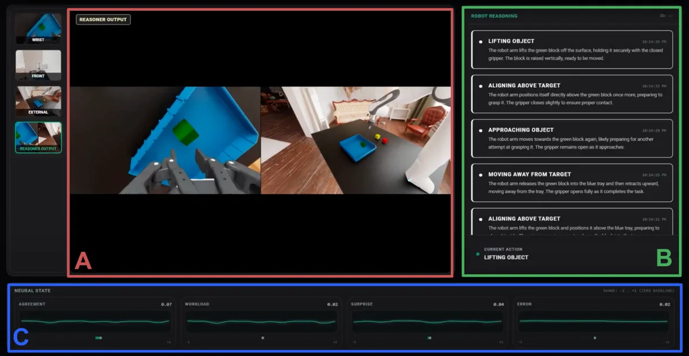
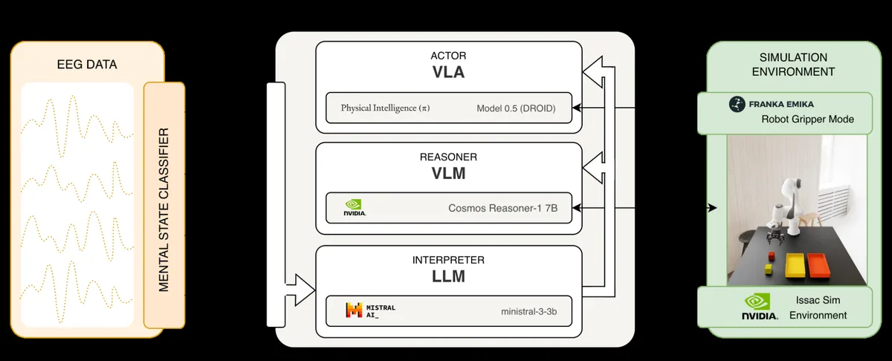

CH.02.1
NEUROADAPTIVE ROBOTICS
SHIPPED · CONTINUES AT ZANDERLABS
A robot that takes correction from your brain, mid-task, with no retraining
I trained a VLA policy in simulation, transferred it to a real arm, then wired a person's brain into the control loop. When the robot is about to get something wrong, EEG-derived signals become natural-language hints that nudge it back on track while it is still moving. The model never sees a gradient update.
- Ran a pi0.5 DROID VLA policy on a Franka Panda in NVIDIA Isaac Sim, then went sim-to-real onto a physical LeRobot SO-101 arm, with VLA data collection and fine-tuning on real hardware.
- Designed the tri-node Actor / Reasoner / Interpreter architecture: Cosmos-Reason1 grounds the scene; EEG-derived workload, agreement, error, and surprise signals drive the correction.
- Held a 15 Hz control and 10 Hz reasoning loop, stable enough to demo live to investors. Seeds two patent filings: HAL and GCRM.
- First-author paper at NAT 2026; presenting author of the companion poster at IK 2026.
isaac sim · pi0.5 droid · franka panda · lerobot so-101 · cosmos-reason1 · eeg / lsl · zeromq · sim-to-real

